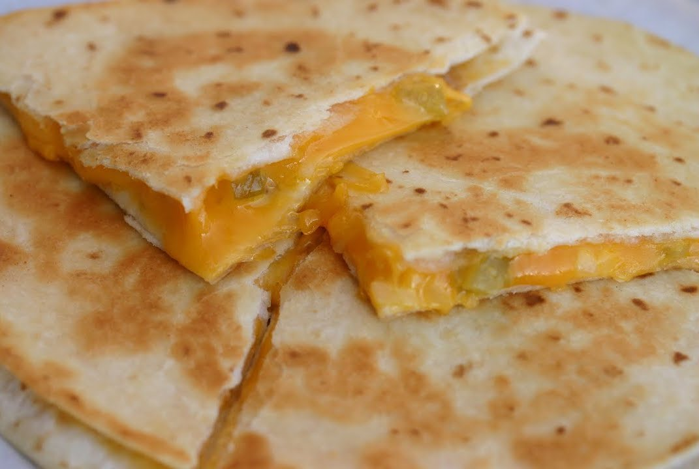

Back to all recipes
Quesadillas

Consider this recipe a starting point on which you can grow. Quesadillas can be made a million different ways, meaning you can add just about any ingredient you can imagine.
Ingredients
- 2 large flour tortillas
- 1 cup shredded cheddar cheese
- 2 tbsp butter, divided
- 1 tbsp finely chopped onion
- 1 green chili pepper, finely chopped
- Sour cream to taste
- Guacamole to taste
Steps
- Sprinkle Cheddar Cheese (1 cup) over one of the tortillas, leaving a half-inch around the perimeter uncovered.
- Sprinkle with Green Chili Pepper (1) and Onions (1 Tbsp) and top with the other tortilla
- Melt half the Butter (1 Tbsp) in a pan on the stove over medium-low heat. Spread around, and place quesadilla onto the pan.
- Add remaining Butter (1 Tbsp) to the top of the tortilla. Let cook for several minutes over low heat. As butter softens, spread over the top tortilla. Once bottom browns and cheese is mostly melted, flip the quesadilla over.
- Let cook until cheese is fully melted, and bottom is nicely browned. Remove from pan, cut, and serve with Sour Cream (to taste) and Guacamole (to taste).